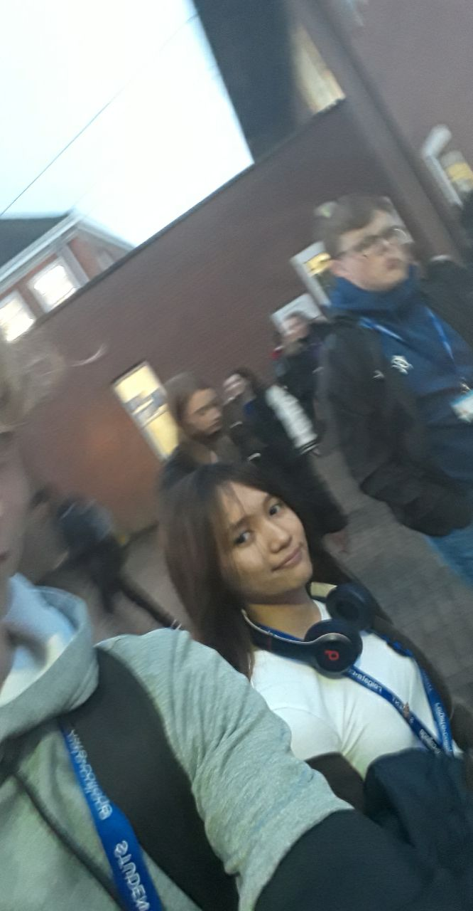

Hey Allysa, its me your boyfriend of almost 2 months when you are reading this Adam.
I know birthdays for you have never been incredible but i hope this can be a little something to make this one special xx
for your birthday i wanna give you a present that you made yourself, i wanna take you through the memory of what you have let
me experience since september 2022 on comunity day at reigate college
*PS you chose the colours on face time and im colour blind so please dont judge*


hehehe funny pictures

believe it or not (i dont) not so long ago i hardly knew you. But i first started to know you on community day is P007
when i spoke to you with kenzo and andre in the corner of the class where you now sit in computing. I was already in the crumbles of a relationship
that just wasnt right and it is safe to say you caught my eye. I first noticed your skin, it stands out thats just a known fact and we spoke about the
questions we were given by jane and i found out you surfed (fromt the moment I found that out it was basically confirmed that at some point i was gonna
go to surf with you and even now im gonna keep working toward that). you were in your classic outfit; black top, dog tags and the navy blue cargos with the
2 D rings on each pocket with the cloth running through it. and then we were told to move and i didnt even move away from you because i didnt know anyone
nd you made me feel comfortable i guess from there i gave kenzo my number and he gave it to you and i got ur snap from there.
we texted a little bit but not much and i was still awkward af because of not knowing you well and being unsure of what i wanted reigate to be like for me but
so far you have helped make it something special and from community day forward i looked forward to

after not too long we started to get to know eachother a bit better and i stared texting you more and
more, as time went by i eventually took this picture as were walking after computing and i remeber
feeling mad abt it cos i didnt take a good picture and i did wanna weird u out and ask for a better one.
(RIP the headphones). you were always a bit mysterious to me and it was clear that you were holding back
alot of yourself which i guess makes sense as i was still sorta new to you. I still remeber playing
apex with you and being nervous af because im shit at apex and i was excited to speak to you. the
kenzo joined aswell which was just eh but stil worth is as it was talking to you which meant i was able to
work on my awkwardness (i am sorry i was so bad)
I hope you are able to find some joy this birthday and i hope i can be involved because seeing you happy
keeps me sane. im not ashamed to admit that you alnone have got me through majority of the shit i have
been through at reigate without even knowing. there have been times when i have just felt shit and i
managed to deal with that by seeing your notification come up on my phone. so thankyou and just know
your effrots havent gone unnoticed and it means alot to me seeing you trying.